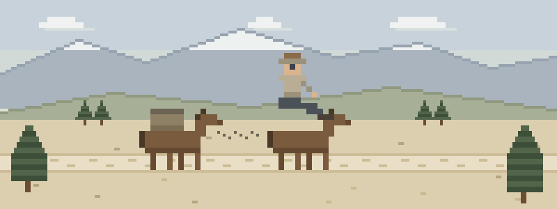

When the wreck settles
- The spook and the rock. She comes off hard at the creek crossing onto ground that doesn’t give. High-energy mechanism plus a sore neck means the spine questions come before the remount — and the helmet comes off by doctrine or not at all.
- Wrong side of the mare. A kick is a crush injury delivered at the speed of reflex. Splint what’s broken with what the panniers carry, check fingers before and after, and take vitals twice — blunt force does its worst work out of sight.
- The wreck where the trail quits. A pack string tangles in deadfall two drainages from any road. One rider is down, three horses aren’t caught, and the scene isn’t safe until the stock is — then the evac plan gets built around the animals that stayed calm.
Barn-aisle reading order
Ordered for stock country:
- Provider Safety — the scene includes a scared horse — contain it before you kneel, or one patient becomes two
- Spine & Helmets — thrown riders are why this lesson exists — motion restriction and the helmet call
- Musculoskeletal Injuries — kicks and crushes — splint before anyone gets moved or mounted
- Patient Assessment — mechanism plus serial vitals, because riders lie politely
- Evacuation — ride out, lead out, or send for help — the math when stock is the ambulance
Then pressure-test it
Interactive scenarios — one decision at a time, tempting mistakes included, debrief at the end:
- Don’t Sit Him Up — neck pain with weather moving in — protect the spine while you move
- The Guy Who’s Fine — the kicked rider who’s joking, until the trend says otherwise
- Two Go, One Stays — sending for help from country without cell bars
The certification question, honestly. “Wilderness First Aid” isn’t a regulated credential. No government body defines what a WFA card means — it means whatever the company that printed it says it means. What counts in front of a patient is whether you can do the work. This course teaches the work, free, and issues a record of completion — not a certificate, and we won’t pretend otherwise. If you pack or guide for an outfitter, a WFR card is often the hiring bar — take that course, and use this to arrive fluent and stay sharp between recerts. For everyone else there’s no card at the trailhead, just whether you know what to do when the dust settles. If nobody requires you to hold a card, what you need are the skills, not the laminate.
What this is
Fifteen lessons, a 40-question knowledge check, sixteen practice scenarios, a printable field reference card, and a kit checklist. Free, no account, nothing recorded about you, source on GitHub. It teaches decision-making, not hands-on skill — practice the hands-on parts on a real, padded, complaining friend.
Other far-from-town neighbors: foragers, herbalists & mushroom hunters · vanlifers & full-time RV travelers · hunters & anglers